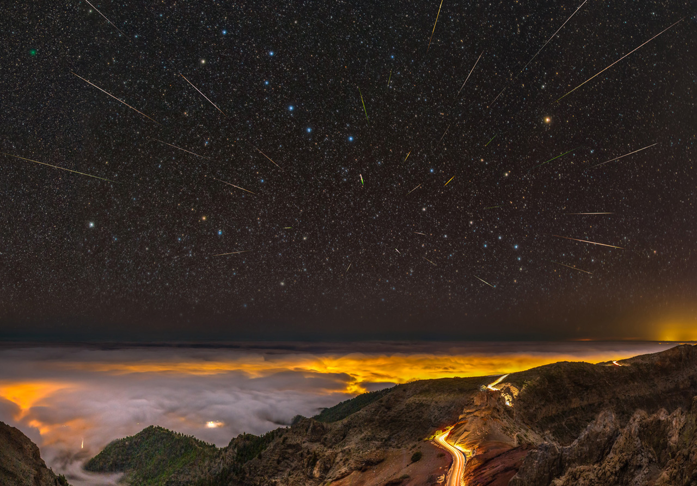

ЧТО ГОД ГРЯДУЩИЙ НАМ ГОТОВИТ?
Январь
3 января — максимум активности метеорного потока Квадрантиды. Ожидаемое зенитное часовое число метеоров равняется 120 (может варьироваться в диапазоне примерно 60-200). Молодая Луна не помешает наблюдениям.
Квадрантиды в 2019 году, о. Ла Пальма, Канарские о-ва, Vincent Duparc
18/19 января — в 2 млн км от Земли пролетит потенциально опасный околоземный астероид 1994 PC1. Его диаметр оценивается в 1 км (±0,3 км). Максимального блеска +10,2 зв. вел. от достигнет 18 января. В России и странах ближнего зарубежья он будет доступен для наблюдений.
Февраль
Увы, ничего интересного не ждем...